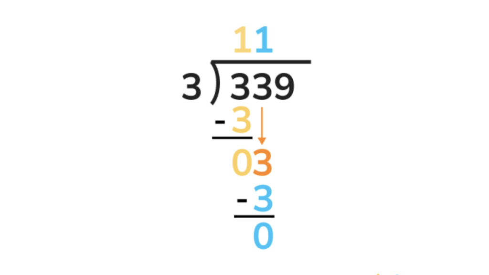

How does a calculator work?
We have all used calculators before: they are really handy tools for tricky, complicated operations, or for helping you out when you are just a bit too tired for mental maths. But how does a calculator work? How does it know how to add, subtract, or do any fancy operation?
Similar to how humans do maths, computers use algorithms: a set of instructions for getting a consistent result. When you do addition on paper, you likely use some sort of algorithm to find the addition, in which you start with the smallest digits, and add the column, making sure to carry over digits that are bigger than 9. Or in long division, where you use the bus stop method

Calculators use much the same algorithms for simple operations like addition or subtraction. But the question that led me to make this demonstration: how does a calculator find the values of the sine and cosine function?
Firstly, for anyone unfamiliar with trigonometry, sine and cosine are wave functions. They are really useful tools in maths for doing all sorts of calculations, like finding missing angles in a triangle, modelling oscillations, or for many purposes in astronomy, for estimating distances.
We can get the values of sine and cosine from the unit circle. The unit circle is a circle with a radius of length 1. If you start from the point (1, 0) on a circle, and trace the circle around anti clockwise, sine of the angle you make with your point would be the y-value of the current point, and cosine of the angle you make with your point would be the x-value of the current point.
The algorithm behind it
So now we know that calculators use algorithms, and that sine and cosine are these useful maths tools. But how does a calculator find the value of sine or cosine for any value? What would an algorithm even look like for this operation?
Enter the CORDIC algorithm. CORDIC is an acronym that stands for "coordinate rotation digital computer". It's not a single algorithm, but a class of algorithms used for many different useful operations in mathematics commonly found in computers due to the use of simple computer commands, making it fast for a computer to calculate values using the algorithm.
CORDIC algorithms use a divide-and-conquer approach: a concept which should be familiar to anyone doing computer science. Let's play a game. I am thinking of a number from 0-100. You can guess as much as you want. If you are wrong, I will tell you higher or lower. If you are right, I will say correct. If you were to play my game optimally, you would start with 50, as this eliminates half of the numbers. Then, you would choose a number 25 below or above, as 25 is half of 50. So given that I say "higher" for the number 50, you should pick 75. I now say "lower". Therefore, you should now pick a number 12 less than 75, as 12 is half of 25, so 75-12 is 63. I say "lower" again, so you would now pick 6 less than 63, as 6 is half of 12, giving you 57, and I now say correct!
That was divide-and-conquer. We picked halves each time as it would ensure whether the number was higher or lower, we would eliminate half the list each time. The CORDIC algorithm to find sine and cosine does something similar, but for angles 0-90, meaning you start with 45. To find the actual values, you make sure to rotate the starting point of (1, 0) every time you add or subtract an angle, and this can be done using something known as a rotation matrix. However, to use a rotation matrix, you need to already know the values of sine and cosine that you are adding and subtracting by. So it's necessary for the calculator to have a table of these known values of sine and cosine. Having a bigger table means you can get more accurate results. In the interactive demonstration, I have included a slider (iterations) that allows you to change the size of this table.
The reason why the angles 0-90 are used is because the values for sine and cosine above 90 can be calculated using some clever tricks rather than having to find the full circle. Since circles are symmetric across both the x and y axis, to find sine and cosine anywhere on the circle, you simply need to negate the values of x and y in the different quadrants.
There are more optimisations that can be done to make the algorithm better, but this demonstration will not be going into them. To use the demonstration, set the angle to whichever you wish to calculate sine and cosine for, shown as the light blue line on the grid, set the speed of the animation (this can be adjusted mid-animation), and set the iterations for the algorithm. More iterations means more accuracy. You can reset the animation (which stops any playing animations), pause it whilst it is playing, or start an animation with the settings you have entered by pressing the buttons.